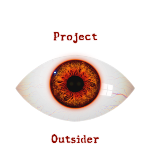

Project Outsider
TEAM: Outsider Team
RELEASE DATE: TBA
GENRE: Horror, Action
Brought to a mysterious island complex, our protagonist and his band of soldiers are initially welcomed into what seems to be a scientific research
facility seeking to cure those afflicted with an unnatural ailment. However, not all is as it seems… Featuring a unique story with characters old &
new, an OST reminiscent of 80s synth, and a defined, complex, and capable protagonist, this is only the beginning of what is shaping up to become an
unforgettable DDLC experience unlike any other.
Welcome to Rapture’s Hope.